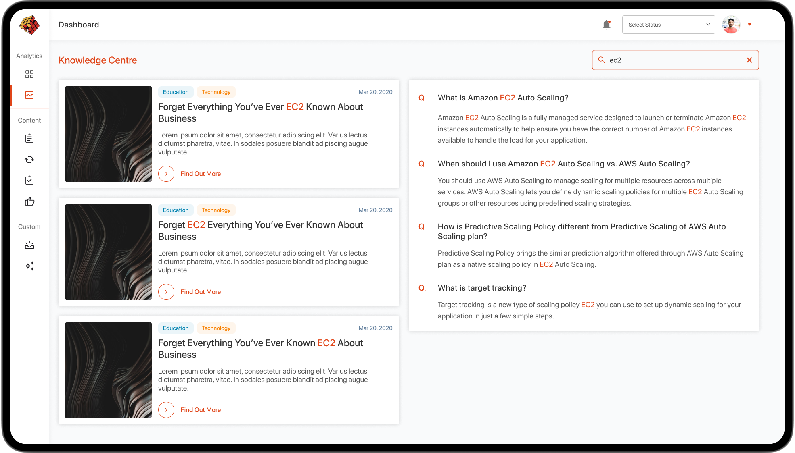
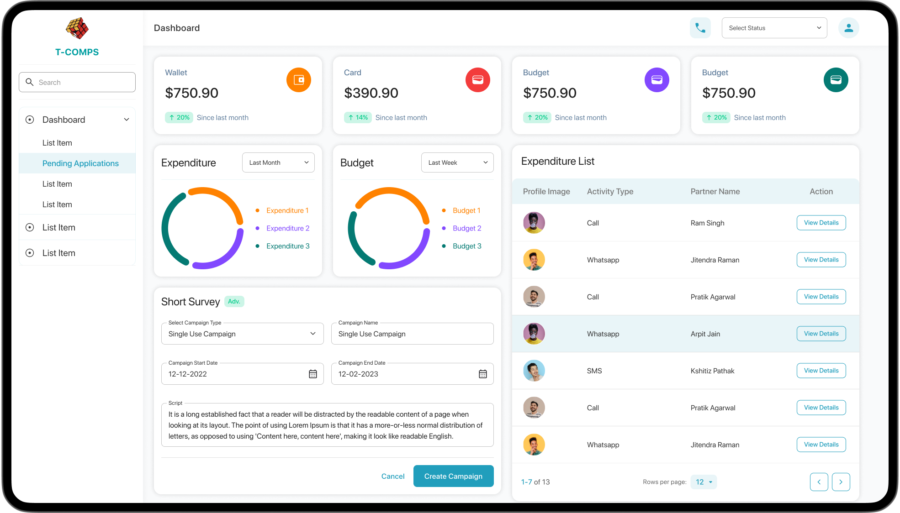
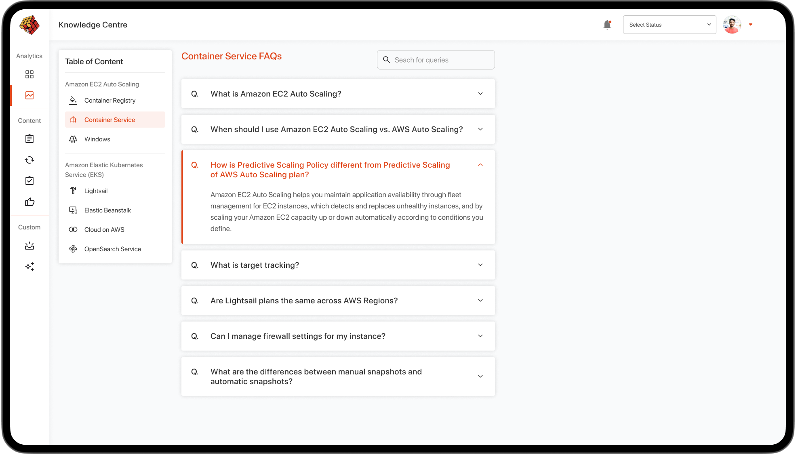

My Role
Research, Define, Userflow, Wireframes, UI, Usability Testing & Documentation
Tools
Figma, Adobe Ai, Invision
Company
Permute Solutions Pvt. Ltd.
Application
Web
Target Audience
Small-Medium Scale Companies

TARP Component Library was designed as a part of startup to create aglie software in Permute Solutions Pvt. Ltd. Few components are shown below to demonstrate the UI perspective of TARP. Tarp uses the grid system to create complete pages design, so all the components are created accordingly.
Metric is quantitative data that you collect & analyze and, hopefully, make better decisions based on this analysis.
Data tables display information in a grid-like format of rows and columns. They organize information in a way that's easy to scan so that users can look for patterns and develop insights from data.
Side navigation lets users navigate the entire content of a product or a section. These can be used for a single level or a multi-level navigation.

Filters provide a set of controls to reduce items in a collection based on attributes the user is interested in (e.g., filtering items by creation date). Filters can provide the following functionality: A list of interesting attributes common to items in a collection, and possible values to filter by.
Lists in web/mobile app UI design are galleries of text, images, or card options that can help users choose one or more options to achieve their goals effortlessly. Many common elements such as drop-down menus, list boxes, checkboxes, and radio button groups are typical examples of list UI design.
Promotion/Helper box is a container wher the promotional things are graphically represented. It can also be used to show the helping things that eases the ux.
Aritcle page is the collection of article of similar type, segregated by categories.

Following pages were designed using the above components.


